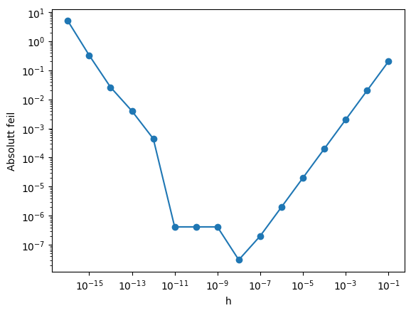
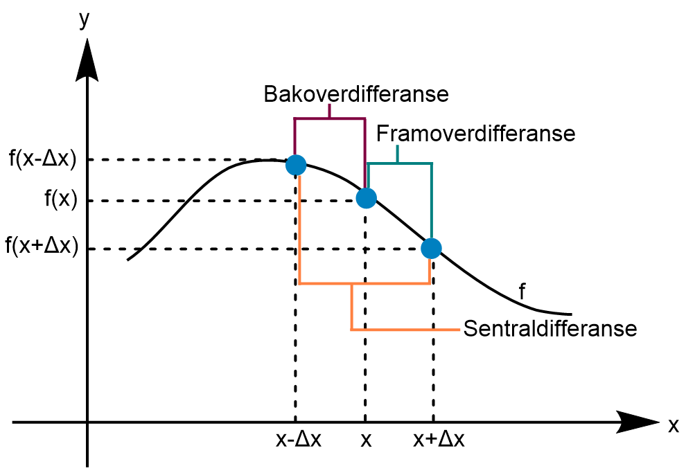
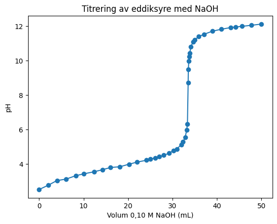
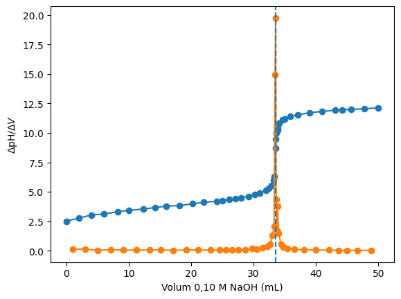
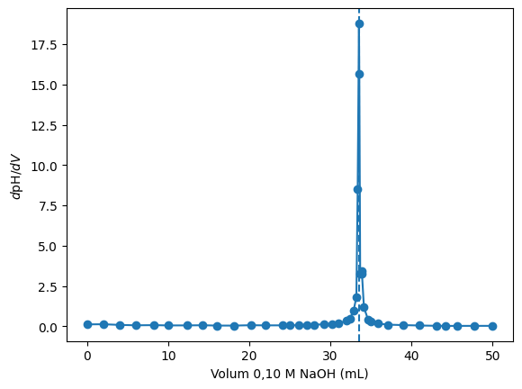

Numerisk derivasjon#
Læringsutbytte
Etter å ha arbeidet med denne delen av emnet, skal du kunne:
forklare forskjellen på analytisk og numerisk derivasjon
implementere framover-, bakover- og sentraldifferansen
undersøke hvordan steglengde og avrundingsfeil påvirker resultatet
derivere eksperimentelle data og tolke hva den numeriske deriverte betyr kjemisk
Derivasjonsbegrepet#
Derivasjon handler om endring. Fra videregående kjenner du gjerne den deriverte som \(f'(x)\). I naturvitenskap brukes også ofte Leibniz-notasjonen
som betyr «endringen i \(f\) med hensyn på \(x\)». De to notasjonene beskriver det samme når \(f\) er en funksjon av \(x\):
I kjemi er denne skrivemåten nyttig fordi variablene har en fysisk betydning. For eksempel beskriver
hvordan en konsentrasjon endrer seg med tid, mens
beskriver hvordan pH endrer seg når vi tilsetter volum i en titrering.
Den deriverte er definert som grenseverdien
På datamaskinen kan vi ikke bruke et uendelig lite \(\Delta x\). Vi erstatter derfor grenseverdien med en liten, endelig steglengde \(h\):
Dette kalles framoverdifferansen.
Underveisoppgave
Beregn \(f'(1)\) numerisk for \(f(x)=2x+2\) med \(h=10^{-8}\). Hva forventer du fra analytisk derivasjon?
import numpy as np
import matplotlib.pyplot as plt
def f(x):
return 2*x + 2
x = 1.0
h = 1E-8
fder = (f(x + h) - f(x))/h
print("Numerisk:", fder)
print("Analytisk:", 2.0)
Numerisk: 1.999999987845058
Analytisk: 2.0
Dette er den enkleste implementeringen: Vi beregner den deriverte i ett bestemt punkt. Numerisk derivasjon gir ikke automatisk en ny symbolsk funksjon slik som når vi deriverer for hånd. Den gir funksjonsverdier til den deriverte i de punktene vi velger.
Når prinsippet er tydelig, kan vi pakke det inn i en Python-funksjon:
def deriver_framover(f, x, h=1E-8):
dy = f(x + h) - f(x)
return dy/h
Hvis vi ønsker å tegne den deriverte som en kurve, beregner vi ganske enkelt den deriverte i mange x-punkter, for eksempel ved å bruke en løkke eller en array:
x = np.linspace(1,3,1000)
y = deriver_framover(f, x, h = 1E-8) # Gir den deriverte i 1000 punkter fra 1 til 3
Feilanalyse: mindre steg er ikke alltid bedre#
Det er fristende å tenke at \(h\) bør være så liten som mulig. To ulike feilmekanismer konkurrerer imidlertid:
Tilnærmingsfeilen blir vanligvis mindre når \(h\) reduseres.
Avrundingsfeil i flyttall kan bli viktig når vi trekker fra to nesten like tall og deler på et svært lite tall.
Det finnes derfor ikke én universell optimal verdi av \(h\). Den avhenger blant annet av funksjonen, tallskalaen og differansemetoden. Nedenfor ser vi at \(h = 1^{-8}\) gir minst feil med framoverdifferansen i dette tilfellet. Dette er altså et godt kompromiss mellom den matematiske tilnærmingsfeilen og avrundingsfeilen som skjer når \(h\) blir liten.
import numpy as np
import matplotlib.pyplot as plt
def f(x):
return 2*x**2 + x - 5
def f_derivert_analytisk(x):
return 4*x + 1
x0 = 1.0
h_verdier = np.logspace(-1, -16, 16)
eksakt = f_derivert_analytisk(x0)
feil = []
for h in h_verdier:
numerisk = deriver_framover(f, x0, h)
feil.append(abs(numerisk - eksakt))
plt.loglog(h_verdier, feil, "o-")
plt.xlabel("h")
plt.ylabel("Absolutt feil")
plt.show()

Andre tilnærminger#
Framoverdifferansen bruker punktene \(x\) og \(x+h\). Men dette er ikke den eneste muligheten. Vi kan like gjerne bruke punktet bak \(x\). Da får vi bakoverdifferansen:
Bakoverdifferansen er ikke introdusert fordi den nødvendigvis er bedre enn framoverdifferansen. Den viser først og fremst at den samme deriverte kan tilnærmes ved å velge datapunkter på ulike måter.
Når vi har én tilnærming som ser framover og én som ser bakover, oppstår en naturlig idé: Hvorfor ikke bruke informasjon fra begge sider av punktet? Det gir sentraldifferansen:
Her ligger punktet \(x\) midt mellom de to punktene som brukes til å beregne stigningen. Dette gir vanligvis en bedre tilnærming enn framover- og bakoverdifferansen for samme steglengde.
{kind=link}

Figuren viser den geometriske forskjellen mellom tilnærmingene.
def deriver_bakover(f, x, h=1E-8):
return (f(x) - f(x - h))/h
def deriver_sentral(f, x, h=1E-5):
return (f(x + h) - f(x - h))/(2*h)
x = 1.0
print("Framover:", deriver_framover(np.sin, x, 1E-5))
print("Bakover:", deriver_bakover(np.sin, x, 1E-5))
print("Sentral:", deriver_sentral(np.sin, x, 1E-5))
print("Analytisk:", np.cos(x))
Framover: 0.5402980985058647
Bakover: 0.540306513208133
Sentral: 0.5403023058569989
Analytisk: 0.5403023058681398
Underveisoppgave
Gjør en feilanalyse av de tre tilnærmingene for flere verdier av \(h\). Bruk \(f(x)=\sin x\) og sammenlikn med \(f'(x)=\cos x\).
Prøv selv#
Sammenlikn de tre differansemetodene for ulike steglengder.
Numerisk derivasjon av eksperimentelle data#
For eksperimentelle data har vi ikke en funksjon \(f(x)\) vi kan evaluere hvor vi vil. Målepunktene bestemmer avstanden mellom \(x\)-verdiene.
Dette gjør numerisk derivasjon svært nyttig, men også mer sårbar: derivasjon forsterker ofte målestøy, fordi små forskjeller mellom nabopunkter deles på et lite intervall.
import pandas as pd
data = pd.read_csv("../datafiler/titreringsdata.txt")
data.head()
| volum | pH | |
|---|---|---|
| 0 | 0.00 | 2.51 |
| 1 | 2.05 | 2.76 |
| 2 | 4.00 | 3.03 |
| 3 | 6.01 | 3.11 |
| 4 | 8.22 | 3.31 |
volum = data["volum"].to_numpy()
pH = data["pH"].to_numpy()
plt.plot(volum, pH, "o-")
plt.xlabel("Volum 0,10 M NaOH (mL)")
plt.ylabel("pH")
plt.title("Titrering av eddiksyre med NaOH")
plt.show()

Hvor skal vi plassere den deriverte?#
Hvis vi bruker to nabopunkter,
er dette den gjennomsnittlige stigningen over intervallet fra \(x_i\) til \(x_{i+1}\). Det mest naturlige stedet å plassere denne verdien er derfor midt i intervallet:
Merk at dette er gjennomsnittet av de to \(x\)-verdiene, ikke halvparten av differansen \((x_{i+1}-x_i)/2\).
Hvis vi i stedet plasserer denne differansen ved \(x_i\), forskyves den numeriske deriverte mot venstre i forhold til intervallet den faktisk beskriver.
dpH_dV = np.diff(pH) / np.diff(volum)
volum_midt = (volum[:-1] + volum[1:]) / 2
i_maks = np.argmax(dpH_dV) # Finner indeksen som tilsvarer maks derivert
V_eq = volum_midt[i_maks] # Finner volumet ved den maks deriverte (ekvivalenspunktet)
print(f"Største intervallstigning finnes rundt {V_eq:.2f} mL.")
plt.plot(volum, pH, "o-", label="Titrerkurve")
plt.xlabel("Volum 0,10 M NaOH (mL)")
plt.ylabel("pH")
plt.plot(volum_midt, dpH_dV, "o-", label=r"$\Delta\mathrm{pH}/\Delta V$")
plt.axvline(V_eq, linestyle="--")
plt.xlabel("Volum 0,10 M NaOH (mL)")
plt.ylabel(r"$\Delta\mathrm{pH}/\Delta V$")
plt.show()
Største intervallstigning finnes rundt 33.54 mL.

For disse dataene ligger den største stigningen mellom 33,52 og 33,56 mL. Midtpunktet er derfor 33,54 mL. Det er et bedre estimat av plasseringen til denne intervallstigningen enn å bruke 33,52 mL direkte.
Dette betyr ikke at det sanne ekvivalenspunktet er kjent med hundredels milliliter. Målefrekvens, måleusikkerhet og valgt differansemetode begrenser presisjonen.
np.gradient: en praktisk metode#
Når vi har forstått differansene selv, kan NumPy gjøre arbeidet for oss. np.gradient(y, x) bruker sentrale differanser i indre punkter og ensidige differanser ved endepunktene. Den kan også bruke ujevnt fordelte \(x\)-verdier, slik vi har i titrerdataene.
gradient = np.gradient(pH, volum)
V_eq_gradient = volum[np.argmax(gradient)]
print(f"Maksimum med np.gradient ligger ved {V_eq_gradient:.2f} mL.")
plt.plot(volum, gradient, "o-")
plt.axvline(V_eq_gradient, linestyle="--")
plt.xlabel("Volum 0,10 M NaOH (mL)")
plt.ylabel(r"$d\mathrm{pH}/dV$")
plt.show()
Maksimum med np.gradient ligger ved 33.52 mL.

Støy og glatting
Numerisk derivasjon kan gjøre tilfeldig målestøy mye tydeligere. Glatting av dataene med for eksempel interpolasjon kan noen ganger være nyttig, men den endrer også dataene. Derfor bør rådata, eventuell glatting og den deriverte alltid vurderes sammen.
Kort oppsummering#
\(f'(x)\) og \(\frac{df}{dx}\) beskriver den samme deriverte.
Numerisk derivasjon erstatter grenseverdien med et endelig steg.
Framover-, bakover- og sentraldifferansen bruker ulike nabopunkter.
Et for lite steg kan gi flyttallsproblemer; «mindre» er ikke alltid «bedre».
For parvise differanser mellom målepunkter hører den beregnede stigningen naturlig til midtpunktet mellom \(x_i\) og \(x_{i+1}\).
np.gradienter et praktisk verktøy når vi har forstått prinsippet.Derivasjon kan forsterke eksperimentell støy.
Oppgaver#
Oppgave 1 – numerisk og analytisk
Beregn \(f'(1)\) numerisk og kontroller ved analytisk derivasjon for:
\(f(x)=x^2-4x+5\)
\(f(x)=e^x\)
\(f(x)=\sqrt{\ln x}\)
Oppgave 2 – feil som funksjon av steglengde
Sammenlikn framover- og sentraldifferansen for \(f(x)=\sin x\) ved \(x=1\). Lag et log-log-plott av absolutt feil for \(h\) fra \(10^{-1}\) til \(10^{-15}\). Kommenter formen på kurvene.
Oppgave 3 – reaksjonsfart fra konsentrasjonsdata
Du har målt konsentrasjonen av A i en reaksjon:
t = [0, 10, 20, 30, 40, 50] s
c = [1.00, 0.82, 0.68, 0.56, 0.47, 0.40] mol/L
Beregn \(\Delta c/\Delta t\) mellom hvert par av målinger og plott reaksjonsfarten \(-\Delta c/\Delta t\) mot midtpunktene i tidsintervallene.
Oppgave 4 – titrering
Bruk titrerdataene i kapitlet.
Finn ekvivalenspunktet med
np.diff.Forklar hvorfor \(x\)-verdiene til den deriverte bør være \((x_i+x_{i+1})/2\).
Finn maksimum med
np.gradient.Sammenlikn estimatene og kommenter hvor mange sifre det er rimelig å rapportere.
Oppgave 5 – potensiell energi
En forenklet potensiell energi er \(U(r)=r^{-12}-2r^{-6}\). Bruk sentraldifferansen til å finne omtrent hvor \(dU/dr=0\). Kontroller ved å plotte \(U(r)\).
Oppgave 6 – ujevnt fordelte data
Lag et lite datasett med ujevnt fordelte tidspunkter og en kjent funksjon. Sammenlikn en beregning som feilaktig antar konstant \(\Delta t\) med np.gradient(y, t).
Oppgave 7 – målestøy
Lag kunstige data fra \(c(t)=e^{-0.1t}\) og legg til litt tilfeldig støy. Deriver både de støyfrie og de støyende dataene numerisk. Hva skjer med støyen?
Oppgave 8 – velg representasjon
Forklar med egne ord forskjellen mellom \(f'(x)\), \(df/dx\), \(\Delta y/\Delta x\) og en numerisk tilnærming til \(df/dx\).